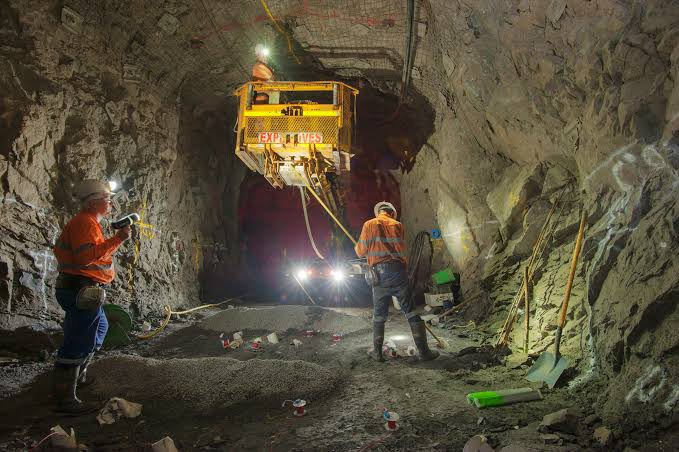

TOURIST ATTRACTIONS
The ANTIQUES OF BARANGAY PANHUTONGAN
Rediscovered sometimes in 1985, when the school toilet of Panhutongan Primary School was constructed, the Contractor accidentally excavated human skeleton, skull and some jewelry’s. In August 1990 when the people was moved by the desire to improved and beautify the school and due to financial constraints agreed to start the operation in the area near the school building and were able to unearthed 3 boat-shaped wooden coffins with human skulls and bones covered with antique plates, tea cups, small saucers, soup bowls, pots, jewelries, bolos and smokes pipe. They also discovered 4 extremeends/remains of wooden post about 1 meter in length and 11/2 feet in diameter and a well built with slabs of stones. Some of the items were donated to the Surigao Heritage Center and the rest were belived to have been bought by unknown persons and are no longer traceable. To preserve the cultural heritage of the town, the LGU ordered to secure the area while awaiting for historian, anthropologist and archeologist to examine and study the origin of the relics.
The first cultural group organized last 1995 was named “BUYAWANONG PLACER CULTURAL GROUP” to promote the cultural heritage, belief and tourism potentials in the municipality. The group consistently won the Bonok-Bonok competitions sponsored by Surigao City Government for three years, Indak-Indak Festival at Davao City and the famous Cebu’s Sinulog festival under the leadership of Mayor Enrique N. Patino. The group changed its name to “TRIBU PLACERNON CULTURAL GROUP” last 2002 under the leadership of Mayor Donald P. Villejo, Sr. and won also the 2nd place on Cebu’s Sinulog 2002 and 5th place on 2003.
The BAHAY TURISTA AT BALUARTE ISLAND
Has four bedrooms and complete comfort room facilities, a conference room, a canteen and numbers of waiting shed, proper places to relax, feel the cool of the fresh air and overlooking the municipality.
The CAVES OF TINAGO ISLAND
A 20 minute pumpboat ride from Placer wharf to the marvelous island of Tinago, accentuated by caves with fascinating rock formation, clear sea water and rich coral reefs.
The MAPASO HOTSPINGS
Situated in Sitio Mapaso. It is about 1.5 kilometer from the town and famous for its curative power for arthritis, rheumatism and skin diseases. There is a boiling spring, hot and lukewarm. When developed, it will be a vital geothermal power source.
The CAGBANTOY BEACH
Situated in Barangay Amoslog. It is about one kilometer from the town proper. Its natural idyllic beauty and glittering beach attracts the people.
The WORLD CAVE-IN at the Manila Mining Corporation
Known in 1976 due to the tragedy that befall to the 5 miners, headed by Engr. Acorda, who were tapped in the underground for 24 days without food. Only 2 survived from that tragedy, Mr. Chato and Mr. Acot.
The GOLD RUSH in Cangomod, Ellaperal
In 1983, the town caught in a frenzy when gold panners from neighboring towns and far-fling places came to placer to venture for gold. The lust for gold common in man congested the area and made the mountain dangerous due to so much tunneling using drip method. After 6 months of frantic gold panning activities, incessant rains and heavy downpour caused the chain of tunnels to give way. Thus, unaccounted number of people were buried alive.
The MINES VIEW in the Manila Mining Corporation

An ideal place for Camping, field trip or simply to escape from the humdrum of urban scenery o just pure lazing around.
The SR. SAN VICENTE SHRINE
Located in Barangay Lakandula. It is a 30 minutes pumpboat ride from the town, viewing the lush greenery of mangrooves and rich coral reefs. It is where the miraculous image of Sr. San Vicente is enshrined. Thousand of people flock to this island to offer prayers, candles and gifts thanking and asking for the miraculous healing and good features.